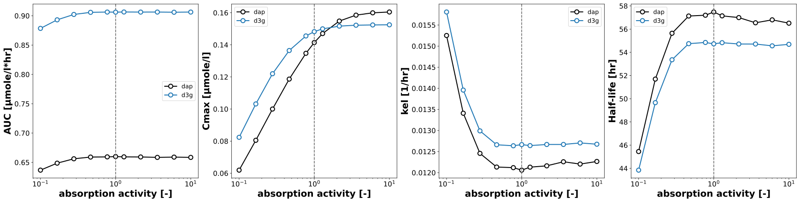

DapagliflozinParameterScan
Models
Datasets
Figures
- pk_dose_scan: DapagliflozinParameterScan_pk_dose_scan.svg
- pk_food_scan: DapagliflozinParameterScan_pk_food_scan.svg
- pk_hepatic_scan: DapagliflozinParameterScan_pk_hepatic_scan.svg
- pk_renal_scan: DapagliflozinParameterScan_pk_renal_scan.svg
{kind=link}
pk_dose_scan

|
pk_food_scan
|  |
pk_hepatic_scan

|
pk_renal_scan

|
Code
../../../../experiments/scans/scan_parameters.py
"""Parameter scans dapagliflozin."""
from typing import Dict, List, Tuple
import numpy as np
import pandas as pd
import matplotlib
import matplotlib.axes
import matplotlib.cm as cm
from matplotlib.colors import LinearSegmentedColormap, Normalize, LogNorm
from matplotlib.ticker import ScalarFormatter,FuncFormatter
from matplotlib.lines import Line2D
from mpl_toolkits.axes_grid1.inset_locator import inset_axes
from pathlib import Path
from sbmlsim.simulation import Timecourse, TimecourseSim, ScanSim, Dimension
from sbmlsim.plot.serialization_matplotlib import FigureMPL
from sbmlsim.plot.serialization_matplotlib import plt
from pkdb_models.models.dapagliflozin.experiments.base_experiment import DapagliflozinSimulationExperiment
from pkdb_models.models.dapagliflozin.helpers import run_experiments
from pkdb_models.models.dapagliflozin.pk import calculate_dapagliflozin_pk as _calc_pk
class DapagliflozinParameterScan(DapagliflozinSimulationExperiment):
"""Scan the effect of parameters on dapagliflozin pharmacokinetics and pharmacodynamics."""
# Dose configurations
dose_levels: List[float] = [0.001, 0.01, 0.1, 0.3, 1.0, 2.5, 5, 10, 20, 25, 50, 100, 250, 500]
dose_labels: List[str] = [f"{d:g} mg" for d in dose_levels]
dose_map: Dict[str, float] = dict(zip(dose_labels, dose_levels))
# Glucose values and colors (edge/line color) for UGE plots
glucose_values_mM: List[float] = [5, 7.5, 9, 11, 13, 15]
glucose_colors: List[str] = ["black", "#d4b9da", "#c994c7", "#df65b0", "#dd1c77", "#980043"]
baseline_glucose_mM: float = 5 # used as healthy baseline for PK plots
diabetes_fpg = {
"N": 5.0,
"D1": 7.5,
"D2": 7.5,
}
parameters_tsv = {
"food_scan": Path(__file__).resolve().parent.parent.parent / "data/parameters/parameters_food.tsv",
"hepatic_scan": Path(__file__).resolve().parent.parent.parent / "data/parameters/parameters_hepatic.tsv",
"renal_scan_50": Path(__file__).resolve().parent.parent.parent / "data/parameters/parameters_renal.tsv",
"renal_scan_20": Path(__file__).resolve().parent.parent.parent / "data/parameters/parameters_renal.tsv",
"dose_scan": Path(__file__).resolve().parent.parent.parent / "data/parameters/parameters_dose.tsv",
}
scan_class = {
"dose_scan": "dose",
"food_scan": "food",
"hepatic_scan": "hepatic function",
"renal_scan_50": "renal function",
"renal_scan_20": "renal function",
}
scan_mapping = {
"dose": {label: label for label in dose_labels},
"food": {
"fasted": "fasted",
"fed": "fed",
},
"hepatic function": {
"healthy": "Control",
"mild": "Mild cirrhosis",
"moderate": "Moderate cirrhosis",
"severe": "Severe cirrhosis",
},
"renal function": {
"healthy": "Normal renal function",
"normal": "Normal renal function",
"mild": "Mild renal impairment",
"moderate": "Moderate renal impairment",
"severe": "Severe renal impairment",
},
}
# Series colors for plotting (dap=black, d3g=grey, uge=black, daptot=blue)
series_fill_colors = {"dap": "black", "d3g": "grey", "uge": "black", "daptot": "#2b3a67"}
series_edge_colors = {"dap": "black", "d3g": "black", "uge": "black", "daptot": "black"}
series_line_colors = {"dap": "black", "d3g": "darkgrey", "uge": "black", "daptot": "#2b3a67"}
tend = 1.0 * 24 * 60 # [min] (24 hours)
steps = 4000
dose_dap = 10
num_points = 15
scan_map = {
"dose_scan": {
"parameter": "PODOSE_dap",
"default": 10.0,
"range": np.array(dose_levels, dtype=float),
"scale": "log",
"units": "mg",
"label": "oral dose [mg]",
"colormap": "Oranges",
"title": "Parameter Scan: Dose Dependency",
},
"food_scan": {
"parameter": "GU__f_absorption",
"default": 1.0,
"range": np.sort(np.append(np.logspace(-1, 1, num=num_points), [1.0])),
"scale": "log",
"colormap": "seismic_r",
"units": "dimensionless",
"label": "absorption activity [-]",
"dose_mg": 10,
"title": "Parameter Scan: Food Effect",
},
"hepatic_scan": {
"parameter": "f_cirrhosis",
"default": 0.0,
"range": np.linspace(0, 0.9, num=num_points),
"scale": "linear",
"units": "dimensionless",
"label": "cirrhosis degree [-]",
"dose_mg": 10,
"title": "Parameter Scan: Hepatic Impairment",
},
"renal_scan_50": {
"parameter": "KI__f_renal_function",
"default": 1.0,
"range": np.sort(np.append(np.logspace(-1, 1, num=num_points), [1.0])),
"scale": "log",
"units": "dimensionless",
"label": "renal function [-]",
"dose_mg": 50, # PK overlays at 50 mg
"title": "Parameter Scan: Renal Impairment",
},
"renal_scan_20": {
"parameter": "KI__f_renal_function",
"default": 1.0,
"range": np.sort(np.append(np.logspace(-1, 1, num=num_points), [1.0])),
"scale": "log",
"units": "dimensionless",
"label": "renal function [-]",
"dose_mg": 20, # UGE overlays at 20 mg
"title": "Parameter Scan: Renal Impairment",
},
}
def simulations(self) -> Dict[str, ScanSim]:
"""Generate simulation scans for all parameter combinations and glucose levels."""
Q_ = self.Q_
tcscans = {}
for scan_key, scan_data in self.scan_map.items():
base_dose = scan_data.get("dose_mg", self.dose_dap)
for glc in self.glucose_values_mM:
tcscans[f"scan_po_{scan_key}__glc{int(glc)}"] = ScanSim(
simulation=TimecourseSim(
Timecourse(
start=0,
end=self.tend,
steps=self.steps,
changes={
**self.default_changes(),
"PODOSE_dap": Q_(base_dose, "mg"),
"[KI__glc_ext]": Q_(glc, "mM"),
},
)
),
dimensions=[
Dimension(
"dim_scan",
changes={
scan_data["parameter"]: Q_(scan_data["range"], scan_data["units"])
},
),
],
)
return tcscans
def calculate_dapagliflozin_pk(self) -> Dict[str, pd.DataFrame]:
"""Calculate PK metrics for each scan at baseline glucose levels."""
pk_dfs: Dict[str, pd.DataFrame] = {}
for scan_key in self.scan_map.keys():
sim_key_base = f"scan_po_{scan_key}__glc{int(self.baseline_glucose_mM)}"
xres = self.results[f"task_{sim_key_base}"]
df = _calc_pk(experiment=self, xres=xres)
pk_dfs[f"scan_po_{scan_key}"] = df
return pk_dfs
def _get_glucose_color(self, diabetes_status: str) -> str:
"""Get the appropriate glucose color based on diabetes status."""
glucose_mM = self.diabetes_fpg.get(diabetes_status, 5.0)
# Find the index of this glucose value in glucose_values_mM
try:
idx = self.glucose_values_mM.index(glucose_mM)
return self.glucose_colors[idx]
except (ValueError, IndexError):
return "black" # Default to black if not found
def _draw_boxplot(self, ax, x: float, stats: dict, facecolor: str,
edgecolor: str = "black", width: float = 0.05,
linewidth: float = 1.5, zorder: int = 4):
"""Draw a single boxplot at position x with given statistics."""
median = stats['median']
q1 = stats['Q1']
q3 = stats['Q3']
min_val = stats['Min']
max_val = stats['Max']
# Draw the box (Q1 to Q3)
box = plt.Rectangle(
(x - width/2, q1), width, q3 - q1,
facecolor=facecolor, edgecolor=edgecolor,
linewidth=linewidth, zorder=zorder
)
ax.add_patch(box)
# median line color: white if box is black, otherwise black
median_color = "black" # "white" if facecolor.lower() == "black" else "black"
# Draw median line
ax.plot([x - width/2, x + width/2], [median, median],
color=median_color, linewidth=linewidth, zorder=zorder+1)
# Draw whiskers (vertical lines from box to min/max)
# Lower whisker: from Q1 to Min
ax.plot([x, x], [q1, min_val],
color=edgecolor, linewidth=linewidth, zorder=zorder)
# Upper whisker: from Q3 to Max
ax.plot([x, x], [q3, max_val],
color=edgecolor, linewidth=linewidth, zorder=zorder)
# Draw whisker caps
cap_width = width * 0.5
ax.plot([x - cap_width/2, x + cap_width/2], [min_val, min_val],
color=edgecolor, linewidth=linewidth, zorder=zorder)
ax.plot([x - cap_width/2, x + cap_width/2], [max_val, max_val],
color=edgecolor, linewidth=linewidth, zorder=zorder)
def _add_dose_note(self, ax, text: str):
ax.text(
0.98, 0.96, text,
transform=ax.transAxes,
ha="right", va="top",
fontsize=11, fontweight="bold",
bbox=dict(boxstyle="round,pad=0.25", facecolor="white", edgecolor="none", alpha=0.7),
zorder=10,
)
def _load_and_clean_study_data(self, tsv_path: Path) -> pd.DataFrame:
"""Load and preprocess study data from TSV file."""
df_raw = pd.read_csv(tsv_path, sep="\t", comment="#")
# Base columns that should always be present
base_cols = ["study", "class", "condition", "parameter", "dose", "substance", "diabetes"]
# Optional columns for mean/SD data
mean_sd_cols = ["mean_unit_conv", "sd_unit_conv"]
# Optional columns for boxplot data
boxplot_cols = ["median", "Q1", "Q3", "Min", "Max"]
# Determine which columns to load
cols_to_load = base_cols.copy()
for col in mean_sd_cols:
if col in df_raw.columns:
cols_to_load.append(col)
for col in boxplot_cols:
if col in df_raw.columns:
cols_to_load.append(col)
df = df_raw[cols_to_load].copy()
# Clean string columns
df["parameter"] = df["parameter"].str.strip()
df["substance"] = df["substance"].str.strip().str.lower()
df["class"] = df["class"].str.strip().str.lower()
df["condition"] = df["condition"].str.strip()
df["diabetes"] = df["diabetes"].str.strip()
df["dose"] = pd.to_numeric(df["dose"], errors="coerce")
# Convert boxplot columns to numeric if present
for col in boxplot_cols:
if col in df.columns:
df[col] = pd.to_numeric(df[col], errors="coerce")
return df
def figures_mpl(self) -> Dict[str, FigureMPL]:
"""Generate all matplotlib figures for the parameter scans."""
self.pk_dfs = self.calculate_dapagliflozin_pk()
return {
# **self.figures_mpl_timecourses(),
**self.figures_mpl_pharmacokinetics(),
}
def figures_mpl_timecourses(self) -> Dict[str, FigureMPL]:
"""Generate timecourse plots for each parameter scan."""
sids = [
"[Cve_dap]",
"[Cve_d3g]",
"Aurine_dap",
"Aurine_d3g",
"Afeces_dap",
]
figures = {}
for scan_key, scan_data in self.scan_map.items():
range_vals = scan_data["range"]
rmin, rmax = range_vals[0], range_vals[-1]
# Configure colormap based on scan type
if scan_key == "hepatic_scan":
cmap = LinearSegmentedColormap.from_list(
"cirrhosis_blues",
[
self.cirrhosis_colors["Mild cirrhosis"],
self.cirrhosis_colors["Moderate cirrhosis"],
self.cirrhosis_colors["Severe cirrhosis"],
],
)
norm = Normalize(vmin=0.0, vmax=0.9, clip=False)
elif scan_key in ["renal_scan_50", "renal_scan_20"]:
vmin, vmax = 0.1, 10.0
def _pos(v):
return (np.log10(v) - np.log10(vmin)) / (np.log10(vmax) - np.log10(vmin))
severe = self.renal_colors["Severe renal impairment"]
moderate = self.renal_colors["Moderate renal impairment"]
mild = self.renal_colors["Mild renal impairment"]
high_ext = "#e5f5e0"
cmap = LinearSegmentedColormap.from_list(
"renal_greens",
[
(_pos(0.1), severe),
(_pos(0.32), moderate),
(_pos(0.69), mild),
(_pos(10.0), high_ext),
],
)
norm = LogNorm(vmin=vmin, vmax=vmax, clip=False)
else:
cmap_str = scan_data["colormap"]
cmap = matplotlib.colormaps.get_cmap(cmap_str)
if scan_data["scale"] == "linear":
norm = Normalize(vmin=rmin, vmax=rmax, clip=False)
else:
norm = LogNorm(vmin=rmin, vmax=rmax, clip=False)
f, axes = plt.subplots(
nrows=1,
ncols=len(sids),
figsize=(6 * len(sids), 6),
dpi=300,
layout="constrained"
)
# Add figure title
panel_title = scan_data.get("title", "Parameter Scan")
f.suptitle(panel_title, fontsize=18, fontweight='bold')
f.suptitle(panel_title, fontsize=18, fontweight='bold')
# Plot timecourses for each output variable
for kcol, sid in enumerate(sids):
ax = axes[kcol]
Q_ = self.Q_
xres = self.results[f"task_scan_po_{scan_key}"]
scandim = xres._redop_dims()[0]
parameter_id = scan_data["parameter"]
par_vec = Q_(xres[parameter_id].values[0], xres.uinfo[parameter_id])
t_vec = xres.dim_mean("time").to(self.units["time"])
t_vec_default = None
c_vec_default = None
for k_par, par in enumerate(par_vec):
c_vec = Q_(
xres[sid].sel({scandim: k_par}).values,
xres.uinfo[sid],
).to(self.units[sid])
linewidth = 2.0
if np.isclose(scan_data["default"], par):
color = "black"
t_vec_default = t_vec
c_vec_default = c_vec
else:
color = cmap(norm(par.magnitude))
ax.plot(
t_vec.magnitude,
c_vec.magnitude,
color=color,
linewidth=linewidth,
)
# Redraw default condition on top in black
if t_vec_default is not None and c_vec_default is not None:
ax.plot(
t_vec_default.magnitude,
c_vec_default.magnitude,
color="black",
linewidth=2.0,
)
ax.set_xlabel(f"{self.label_time} [{self.units['time']}]", fontdict=self.font)
ax.tick_params(axis="x", labelsize=self.tick_font_size)
ax.tick_params(axis="y", labelsize=self.tick_font_size)
ax.set_ylabel(f"{self.labels[sid]} [{self.units[sid]}]", fontdict=self.font)
if sid in ["[Cve_dap]", "[Cve_d3g]"]:
if scan_key in ["renal_scan_50", "renal_scan_20"]:
ax.set_xlim(0, 35)
else:
ax.set_xlim(0, 21)
# Add colorbar showing parameter range
cb_ax = f.add_axes(rect=[0.08, 0.85, 0.1, 0.08])
cb_ax.set_in_layout(True)
cbar = f.colorbar(
cm.ScalarMappable(norm=norm, cmap=cmap),
cax=cb_ax,
orientation="horizontal",
)
if scan_key == "hepatic_scan":
ticks = [0.0, 0.9]
cbar.set_ticks(ticks)
cbar.set_ticklabels(ticks, **{"size": 15, "weight": "medium"})
cbar.ax.axvline(x=scan_data["default"], color="black", linewidth=2)
elif scan_key in ["renal_scan_50", "renal_scan_20"]:
ticks = [0.1, 10.0]
cbar.set_ticks(ticks)
cbar.set_ticklabels(ticks, **{"size": 15, "weight": "medium"})
cbar.ax.axvline(x=scan_data["default"], color="black", linewidth=2)
else:
rmin, rmax = scan_data["range"][0], scan_data["range"][-1]
ticks = [rmin, rmax]
if scan_data["default"] not in ticks:
ticks.append(scan_data["default"])
ticks = sorted(ticks)
cbar.set_ticks(ticks)
cbar.set_ticklabels(ticks, **{"size": 15, "weight": "medium"})
cbar.ax.axvline(x=scan_data["default"], color="black", linewidth=2)
cbar.ax.set_xlabel(scan_data["label"], **{"size": 15, "weight": "bold"})
figures[f"timecourse__{scan_key}"] = f
return figures
def figures_mpl_pharmacokinetics(self) -> Dict[str, FigureMPL]:
"""Generate pharmacokinetic parameter plots with study data overlays."""
Q_ = self.Q_
figures: Dict[str, FigureMPL] = {}
marker_size_pts = 11.0
scatter_s = marker_size_pts ** 1.7
edge_width = 1.8
line_width = 2.0
dpi = 300
ylims = {
# "aucinf": (-1, 65),
# "cmax": (-0.5, 14),
# "thalf": (-5, 60),
#"UGE": (-5, 200),
}
def add_scan_strip(ax, cmap, norm, vmin, vmax, scale: str, height_frac: float = 0.03):
"""Draw a thin horizontal gradient strip at top of axes showing parameter range."""
ax.margins(y=0.08)
if isinstance(norm, LogNorm) or scale == "log":
xs = np.geomspace(max(vmin, 1e-12), vmax, 256)
else:
xs = np.linspace(vmin, vmax, 256)
strip_ax = inset_axes(ax, width="100%", height=f"{height_frac * 100:.2f}%", loc="upper center", borderpad=0)
strip_ax.imshow(xs[np.newaxis, :], aspect="auto", cmap=cmap, norm=norm, origin="lower", extent=(0, 1, 0, 1))
strip_ax.set_axis_off()
strip_ax.set_zorder(ax.get_zorder() + 1)
def style_for_index(i: int) -> Tuple[str, str]:
"""Generate unique marker style for each study index."""
base_markers = ["s", "^", "v", "<", ">", "D", "d", "p", "h"]
fillstyles = ["full", "left", "right", "top", "bottom"]
return base_markers[i % len(base_markers)], fillstyles[(i // len(base_markers)) % len(fillstyles)]
def create_series_handles() -> List[Line2D]:
"""Create legend handles for dap and d3g series."""
return [
Line2D([0], [0], marker="o", linestyle="",
markerfacecolor=self.series_fill_colors["dap"],
markeredgecolor=self.series_edge_colors["dap"],
markeredgewidth=edge_width,
markersize=marker_size_pts, label="dap"),
Line2D([0], [0], marker="o", linestyle="",
markerfacecolor=self.series_fill_colors["d3g"],
markeredgecolor=self.series_edge_colors["d3g"],
markeredgewidth=edge_width,
markersize=marker_size_pts, label="d3g"),
]
# Generate PK figures for dose, food, and hepatic scans
for scan_key in ["dose_scan", "food_scan", "hepatic_scan"]:
if scan_key not in self.scan_map:
continue
scan_data = self.scan_map[scan_key]
range_vals = scan_data["range"]
rmin, rmax = float(range_vals[0]), float(range_vals[-1])
# Configure colormap and normalization
if scan_key == "hepatic_scan":
cmap = LinearSegmentedColormap.from_list(
"cirrhosis_blues",
[
self.cirrhosis_colors["Mild cirrhosis"],
self.cirrhosis_colors["Moderate cirrhosis"],
self.cirrhosis_colors["Severe cirrhosis"],
],
)
norm = Normalize(vmin=0.0, vmax=0.9, clip=False)
vmin_strip, vmax_strip = 0.0, 0.9
else:
cmap_str = scan_data.get("colormap", "viridis")
cmap = matplotlib.colormaps.get_cmap(cmap_str)
if scan_data["scale"] == "linear":
norm = Normalize(vmin=rmin, vmax=rmax, clip=False)
else:
norm = LogNorm(vmin=rmin, vmax=rmax, clip=False)
vmin_strip, vmax_strip = rmin, rmax
metrics_plus = ["aucinf", "cmax", "thalf", "UGE"]
f, axes = plt.subplots(
nrows=1, ncols=len(metrics_plus), figsize=(6 * len(metrics_plus), 6),
dpi=dpi, layout="constrained"
)
axes = axes.flatten()
# Add figure title
panel_title = scan_data.get("title", "Parameter Scan")
f.suptitle(panel_title, fontsize=22, fontweight='bold')
sim_key_base = f"scan_po_{scan_key}__glc{int(self.baseline_glucose_mM)}"
xres_base = self.results[f"task_{sim_key_base}"]
df_all = self.pk_dfs[f"scan_po_{scan_key}"]
parameter_id = scan_data["parameter"]
scandim = "dim_scan"
x_q = Q_(xres_base[parameter_id].values[0], xres_base.uinfo[parameter_id])
x_vals = np.asarray([float(v) for v in x_q.magnitude])
t_vec = xres_base.dim_mean("time").to(self.units["time"]).magnitude
t24_min = 24 * 60
idx_24h = int(np.argmin(np.abs(t_vec - t24_min)))
study_handles_per_metric: Dict[str, Dict[str, Line2D]] = {
"aucinf": {}, "cmax": {}, "thalf": {}, "UGE": {},
}
param_ax_idx = {"aucinf": 0, "cmax": 1, "thalf": 2, "UGE": len(axes) - 1}
# Plot simulation results
for k, pk_key in enumerate(metrics_plus):
ax = axes[k]
ax.axvline(x=scan_data["default"], color="grey", linestyle="--", linewidth=1.2, zorder=1)
if pk_key != "UGE":
# Plot PK metrics (AUC, Cmax, half-life) for dap and d3g
for substance in ["dap", "d3g"]:
df = df_all[df_all.substance == substance].copy()
if not df.empty:
yq = Q_(df[pk_key].to_numpy(), df[f"{pk_key}_unit"].values[0]).to(self.pk_units[pk_key])
y = yq.magnitude
ax.plot(
x_vals, y,
linestyle="-", linewidth=line_width,
color=self.series_line_colors[substance], alpha=0.9, zorder=2,
)
ax.scatter(
x_vals, y, s=scatter_s,
facecolors=self.series_fill_colors[substance],
edgecolors=self.series_edge_colors[substance],
linewidths=edge_width, zorder=3,
)
# Plot daptot (total dapagliflozin) only for dose scan
if scan_key == "dose_scan" and pk_key in ["aucinf", "cmax"]:
df_dt = df_all[df_all.substance == "daptot"].copy()
if not df_dt.empty:
yq_dt = Q_(df_dt[pk_key].to_numpy(), df_dt[f"{pk_key}_unit"].values[0]).to(
self.pk_units[pk_key])
y_dt = yq_dt.magnitude
if y_dt.size != len(x_vals):
y_dt = y_dt[-len(x_vals):]
ax.plot(
x_vals, y_dt,
linestyle="-", linewidth=line_width,
color=self.series_line_colors["daptot"], alpha=0.9, zorder=2,
)
ax.scatter(
x_vals, y_dt, s=scatter_s,
facecolors=self.series_fill_colors["daptot"],
edgecolors=self.series_edge_colors["daptot"],
linewidths=edge_width, zorder=3,
)
ax.set_ylabel(f"{self.pk_labels[pk_key]} [{self.pk_units[pk_key]}]", fontdict=self.scan_font)
else:
# Plot UGE (24 h) with multiple glucose concentrations
uge_sid = "KI__UGE"
glucose_handles: List[Line2D] = []
for j, glc in enumerate(self.glucose_values_mM):
sim_key = f"scan_po_{scan_key}__glc{int(glc)}"
xres = self.results[f"task_{sim_key}"]
uge_unit = xres.uinfo[uge_sid]
uge_24h_g = [
Q_(xres[uge_sid].isel({scandim: i}).values[idx_24h], uge_unit).to("g").magnitude
for i in range(len(x_vals))
]
color = self.glucose_colors[j]
ax.plot(x_vals, uge_24h_g, linestyle="-", linewidth=line_width, color=color, zorder=2)
ax.scatter(
x_vals, uge_24h_g, s=scatter_s,
facecolors=self.series_fill_colors["uge"],
edgecolors=color,
linewidths=edge_width, zorder=3
)
glucose_handles.append(
Line2D(
[0], [0], marker="o", linestyle="-",
markerfacecolor=self.series_fill_colors["uge"],
markeredgecolor=color, markeredgewidth=edge_width,
linewidth=line_width, color=color,
markersize=marker_size_pts, label=f"{glc} mM"
)
)
ax.set_ylabel("UGE (24 hr) [g]", fontdict=self.scan_font)
ax.tick_params(axis="x", labelsize=self.tick_font_size)
ax.tick_params(axis="y", labelsize=self.tick_font_size)
ax.set_xlabel(scan_data["label"], fontdict=self.scan_font)
if scan_data["scale"] == "log":
ax.set_xscale("log")
if scan_key == "dose_scan":
# scientific notation for <1
def dose_formatter(x, pos):
if x >= 1:
return f"{int(x)}" if x == int(x) else f"{x:g}"
else:
exp = int(np.floor(np.log10(x)))
return f"$10^{{{exp}}}$"
ax.xaxis.set_major_formatter(FuncFormatter(dose_formatter))
else:
ax.xaxis.set_major_formatter(ScalarFormatter())
ax.ticklabel_format(style="plain", axis="x")
# if pk_key in ylims:
# ax.set_ylim(*ylims[pk_key])
add_scan_strip(ax, cmap=cmap, norm=norm,
vmin=vmin_strip, vmax=vmax_strip, scale=scan_data["scale"], height_frac=0.03)
if scan_key in ("food_scan", "hepatic_scan"):
self._add_dose_note(ax, "10 mg PO")
# Load and overlay study data
df_st = self._load_and_clean_study_data(self.parameters_tsv[scan_key])
params_to_overlay = {"aucinf", "cmax", "thalf", "UGE"}
cls = self.scan_class[scan_key]
num_map = {
"food": self.fasting_map,
"renal function": self.renal_map,
"hepatic function": self.cirrhosis_map,
"dose": self.dose_map,
}[cls]
studies = pd.unique(df_st["study"])
study_style = {s: style_for_index(i) for i, s in enumerate(studies)}
# Overlay study data for PK metrics
for pk_param in ["aucinf", "cmax", "thalf"]:
if pk_param not in params_to_overlay:
continue
ax = axes[param_ax_idx[pk_param]]
# Include daptot for dose scan in aucinf and cmax panels
substances = ["dap", "d3g"]
if scan_key == "dose_scan" and pk_param in ["aucinf", "cmax"]:
substances.append("daptot")
for substance in substances:
dfx = df_st[(df_st["parameter"] == pk_param) & (df_st["substance"] == substance)]
if dfx.empty:
continue
for _, row in dfx.iterrows():
if cls == "dose":
x = float(row["dose"])
else:
cond_raw = row["condition"]
cond_canon = self.scan_mapping[cls][cond_raw]
x = float(num_map[cond_canon])
y = float(row["mean_unit_conv"])
yerr = row["sd_unit_conv"]
face = self.series_fill_colors[substance]
edge = self.series_edge_colors[substance]
m, fs = study_style[row["study"]]
# Plot with or without error bars
if pd.notna(yerr) and float(yerr) != 0.0:
# Error bar colors: dap=black, d3g=darkgrey, daptot=blue
if substance == "dap":
err_color = "black"
elif substance == "d3g":
err_color = "darkgrey"
else: # daptot
err_color = self.series_edge_colors["daptot"]
eb = ax.errorbar(
[x], [y], yerr=[[yerr], [yerr]],
fmt=m, markersize=marker_size_pts,
fillstyle=fs, mfc=face, mec=edge, mew=edge_width,
lw=1.2, ecolor=err_color, capsize=3, zorder=4
)
if eb.lines:
eb.lines[0].set_markerfacecoloralt("none")
else:
pt, = ax.plot(
[x], [y],
linestyle="", marker=m, markersize=marker_size_pts,
fillstyle=fs, mfc=face, mec=edge, mew=edge_width, zorder=4
)
pt.set_markerfacecoloralt("none")
# Collect study handles for legend
if row["study"] not in study_handles_per_metric[pk_param]:
lm, lfs = study_style[row["study"]]
study_handles_per_metric[pk_param][row["study"]] = Line2D(
[0], [0], marker=lm, linestyle="",
fillstyle=lfs,
markerfacecolor="none",
markerfacecoloralt="none",
markeredgecolor="black", markeredgewidth=edge_width,
markersize=marker_size_pts, label=row["study"]
)
# === Fed–Fasted connector lines (only for food_scan, AUCinf + Cmax) ===
if scan_key == "food_scan":
dfg = df_st[df_st["class"] == "food"].copy()
if not dfg.empty:
dfg["cond_canon"] = dfg["condition"].map(self.scan_mapping["food"])
for pk_param in ["aucinf", "cmax", "thalf"]:
dpk = dfg[dfg["parameter"] == pk_param].copy()
if dpk.empty:
continue
dpk_agg = (
dpk.groupby(
["study", "dose", "substance", "parameter", "cond_canon"],
dropna=False
)
.agg(mean_y=("mean_unit_conv", "mean"))
.reset_index()
)
# pivot to get fasted/fed side by side
piv = dpk_agg.pivot_table(
index=["study", "dose", "substance", "parameter"],
columns="cond_canon",
values="mean_y",
aggfunc="mean"
).reset_index()
ax = axes[param_ax_idx[pk_param]]
x_fasted = float(self.fasting_map["fasted"])
x_fed = float(self.fasting_map["fed"])
for _, r in piv.iterrows():
y_fasted = r["fasted"] if "fasted" in piv.columns else np.nan
y_fed = r["fed"] if "fed" in piv.columns else np.nan
if pd.isna(y_fasted) or pd.isna(y_fed):
continue
sub = r["substance"]
conn_color = "black" if sub == "dap" else "darkgrey"
ax.plot(
[x_fasted, x_fed],
[float(y_fasted), float(y_fed)],
linestyle="--",
linewidth=1.2,
color=conn_color,
zorder=3.5,
)
# Add legends to PK panels
for pk_param in ["aucinf", "cmax", "thalf"]:
ax = axes[param_ax_idx[pk_param]]
handles_for_legend = create_series_handles()
# Add daptot handle for dose scan
if scan_key == "dose_scan" and pk_param in ["aucinf", "cmax"]:
daptot_handle = Line2D([0], [0], marker="o", linestyle="",
markerfacecolor=self.series_fill_colors["daptot"],
markeredgecolor=self.series_edge_colors["daptot"],
markeredgewidth=edge_width,
markersize=marker_size_pts, label="daptot")
handles_for_legend.append(daptot_handle)
handles = handles_for_legend + list(study_handles_per_metric[pk_param].values())
if handles:
ax.legend(
handles=handles,
loc="upper left",
frameon=True,
fontsize=10,
ncol=2,
bbox_to_anchor=(0.0, 0.98),
bbox_transform=ax.transAxes,
)
# Overlay UGE study data
ax_uge = axes[param_ax_idx["UGE"]]
dfx = df_st[df_st["parameter"] == "UGE"]
study_handles_uge: Dict[str, Line2D] = {}
# Check for boxplot data or mean/SD data
has_boxplot = all(col in dfx.columns for col in ['median', 'Q1', 'Q3', 'Min', 'Max'])
has_mean_sd = all(col in dfx.columns for col in ['mean_unit_conv', 'sd_unit_conv'])
if not dfx.empty:
for _, row in dfx.iterrows():
if cls == "dose":
x = float(row["dose"])
else:
cond_raw = row["condition"]
cond_canon = self.scan_mapping[cls][cond_raw]
x = float(num_map[cond_canon])
face = self.series_fill_colors["uge"]
# Get edge color based on diabetes status
diabetes_status = row.get("diabetes", "N")
glucose_color = self._get_glucose_color(diabetes_status)
# Plot boxplot if data is available
if has_boxplot and pd.notna(row.get('median')):
# Plot as boxplot
stats = {
'median': float(row['median']),
'Q1': float(row['Q1']),
'Q3': float(row['Q3']),
'Min': float(row['Min']),
'Max': float(row['Max'])
}
# Determine box width based on x-scale
if scan_data["scale"] == "log":
box_width = 0.15 * x # 15% of x for log scale
else:
# For linear scale
box_width = (vmax_strip - vmin_strip) * 0.02
self._draw_boxplot(
ax_uge, x, stats,
facecolor=glucose_color,
edgecolor="black",
width=box_width,
linewidth=1.5,
zorder=4
)
# Add study to legend
if row["study"] not in study_handles_uge:
study_handles_uge[row["study"]] = Line2D(
[0], [0], marker="s", linestyle="",
markerfacecolor=glucose_color,
markeredgecolor="black", markeredgewidth=edge_width,
markersize=marker_size_pts, label=row["study"]
)
# Plot mean if data is available
if has_mean_sd and pd.notna(row.get('mean_unit_conv')):
y = float(row["mean_unit_conv"])
yerr = row.get("sd_unit_conv")
edge = glucose_color
m, fs = study_style[row["study"]]
if pd.notna(yerr) and float(yerr) != 0.0:
eb = ax_uge.errorbar(
[x], [y], yerr=[[yerr], [yerr]],
fmt=m, markersize=marker_size_pts,
fillstyle=fs, mfc=face, mec=edge, mew=edge_width,
lw=1.2, ecolor="black", capsize=3, zorder=4
)
if eb.lines:
eb.lines[0].set_markerfacecoloralt("none")
else:
pt, = ax_uge.plot(
[x], [y],
linestyle="", marker=m, markersize=marker_size_pts,
fillstyle=fs, mfc=face, mec=edge, mew=edge_width, zorder=4
)
pt.set_markerfacecoloralt("none")
# Add study to legend if not already added from boxplot
if row["study"] not in study_handles_uge:
lm, lfs = study_style[row["study"]]
study_handles_uge[row["study"]] = Line2D(
[0], [0], marker=lm, linestyle="",
fillstyle=lfs,
markerfacecolor="none",
markerfacecoloralt="none",
markeredgecolor="black", markeredgewidth=edge_width,
markersize=marker_size_pts, label=row["study"]
)
# Create glucose legend handles
glucose_handles = [
Line2D([0], [0], marker="o", linestyle="-",
markerfacecolor="black",
markeredgecolor=self.glucose_colors[i],
markeredgewidth=edge_width,
linewidth=line_width, color=self.glucose_colors[i],
markersize=marker_size_pts, label=f"{gv} mM")
for i, gv in enumerate(self.glucose_values_mM)
]
# Add UGE legend
handles = glucose_handles + list(study_handles_uge.values())
if handles:
ax_uge.legend(
handles=handles,
loc="upper left",
frameon=True,
fontsize=10,
ncol=2,
bbox_to_anchor=(0.0, 0.98),
bbox_transform=ax_uge.transAxes,
)
figures[f"pk_{scan_key}"] = f
# === Combined RENAL figure (PK from 50 mg scan; UGE from 20 mg scan) ===
if "renal_scan_50" in self.scan_map and "renal_scan_20" in self.scan_map:
# Configure renal colormap
vmin, vmax = 0.1, 10.0
def _pos(v):
return (np.log10(v) - np.log10(vmin)) / (np.log10(vmax) - np.log10(vmin))
severe = self.renal_colors["Severe renal impairment"]
moderate = self.renal_colors["Moderate renal impairment"]
mild = self.renal_colors["Mild renal impairment"]
high_ext = "#e5f5e0"
renal_cmap = LinearSegmentedColormap.from_list(
"renal_greens",
[
(_pos(0.1), severe),
(_pos(0.32), moderate),
(_pos(0.69), mild),
(_pos(10.0), high_ext),
],
)
renal_norm = LogNorm(vmin=vmin, vmax=vmax, clip=False)
f_comb, axes_comb = plt.subplots(nrows=1, ncols=4, figsize=(24, 6), dpi=dpi, layout="constrained")
ax_auc, ax_cmax, ax_thalf, ax_uge = axes_comb
# Add figure title
panel_title = "Parameter Scan: Renal Impairment"
f_comb.suptitle(panel_title, fontsize=22, fontweight='bold')
scan50 = self.scan_map["renal_scan_50"]
sim50_base = f"scan_po_renal_scan_50__glc{int(self.baseline_glucose_mM)}"
xres50 = self.results[f"task_{sim50_base}"]
df50 = self.pk_dfs["scan_po_renal_scan_50"]
param_id = scan50["parameter"]
scandim = "dim_scan"
x_q50 = Q_(xres50[param_id].values[0], xres50.uinfo[param_id])
x_vals50 = np.asarray([float(v) for v in x_q50.magnitude])
# Add default reference lines
for ax in [ax_auc, ax_cmax, ax_thalf]:
ax.axvline(x=scan50["default"], color="grey", linestyle="--", linewidth=1.2, zorder=1)
metrics = ["aucinf", "cmax", "thalf"]
# Plot PK simulation results from 50 mg scan
for (ax, pk_key) in zip([ax_auc, ax_cmax, ax_thalf], metrics):
for substance in ["dap", "d3g"]:
df_sub = df50[df50.substance == substance].copy()
yq = Q_(df_sub[pk_key].to_numpy(), df_sub[f"{pk_key}_unit"].values[0]).to(self.pk_units[pk_key])
y = yq.magnitude
ax.plot(x_vals50, y, linestyle="-", linewidth=line_width, color=self.series_line_colors[substance],
alpha=0.9, zorder=2)
ax.scatter(x_vals50, y, s=scatter_s, facecolors=self.series_fill_colors[substance],
edgecolors=self.series_edge_colors[substance], linewidths=edge_width, zorder=3)
ax.tick_params(axis="x", labelsize=self.tick_font_size)
ax.tick_params(axis="y", labelsize=self.tick_font_size)
ax.set_xlabel(scan50["label"], fontdict=self.scan_font)
ax.set_ylabel(f"{self.pk_labels[pk_key]} [{self.pk_units[pk_key]}]", fontdict=self.scan_font)
ax.set_xscale("log")
ax.xaxis.set_major_formatter(ScalarFormatter())
ax.ticklabel_format(style="plain", axis="x")
add_scan_strip(ax, cmap=renal_cmap, norm=renal_norm, vmin=vmin, vmax=vmax, scale="log",
height_frac=0.03)
self._add_dose_note(ax, "50 mg PO")
# if pk_key in ylims:
# ax.set_ylim(*ylims[pk_key])
# Plot UGE simulation results from 20 mg scan
scan20 = self.scan_map["renal_scan_20"]
param_id20 = scan20["parameter"]
sim20_base = f"scan_po_renal_scan_20__glc{int(self.baseline_glucose_mM)}"
xres20_base = self.results[f"task_{sim20_base}"]
t_vec20 = xres20_base.dim_mean("time").to(self.units["time"]).magnitude
idx_24h_20 = int(np.argmin(np.abs(t_vec20 - 24 * 60)))
x_q20 = Q_(xres20_base[param_id20].values[0], xres20_base.uinfo[param_id20])
x_vals20 = np.asarray([float(v) for v in x_q20.magnitude])
uge_sid = "KI__UGE"
glucose_handles_renal: List[Line2D] = []
ax_uge.axvline(x=scan20["default"], color="grey", linestyle="--", linewidth=1.2, zorder=1)
for j, glc in enumerate(self.glucose_values_mM):
sim20 = f"scan_po_renal_scan_20__glc{int(glc)}"
xres20 = self.results[f"task_{sim20}"]
uge_unit20 = xres20.uinfo[uge_sid]
uge_24h_g20 = [
Q_(xres20[uge_sid].isel({scandim: i}).values[idx_24h_20], uge_unit20).to("g").magnitude
for i in range(len(x_vals20))
]
color = self.glucose_colors[j]
ax_uge.plot(x_vals20, uge_24h_g20, linestyle="-", linewidth=line_width, color=color, zorder=2)
ax_uge.scatter(x_vals20, uge_24h_g20, s=scatter_s,
facecolors="black", edgecolors=color,
linewidths=edge_width, zorder=3)
glucose_handles_renal.append(
Line2D([0], [0], marker="o", linestyle="-",
markerfacecolor="black", markeredgecolor=color,
markeredgewidth=edge_width, linewidth=line_width, color=color,
markersize=marker_size_pts, label=f"{glc} mM")
)
ax_uge.tick_params(axis="x", labelsize=self.tick_font_size)
ax_uge.tick_params(axis="y", labelsize=self.tick_font_size)
ax_uge.set_xlabel(scan20["label"], fontdict=self.scan_font)
ax_uge.set_ylabel("UGE (24 hr) [g]", fontdict=self.scan_font)
ax_uge.set_xscale("log")
ax_uge.xaxis.set_major_formatter(ScalarFormatter())
ax_uge.ticklabel_format(style="plain", axis="x")
add_scan_strip(ax_uge, cmap=renal_cmap, norm=renal_norm, vmin=vmin, vmax=vmax, scale="log",
height_frac=0.03)
self._add_dose_note(ax_uge, "20 mg PO")
# ax_uge.set_ylim(*ylims["UGE"])
# Load renal study data
df_st_renal = self._load_and_clean_study_data(self.parameters_tsv["renal_scan_50"])
num_map = self.renal_map
# Filter for 50 mg PK data
df_pk50 = df_st_renal[
(df_st_renal["class"] == "renal function") &
(df_st_renal["dose"] == 50) &
(df_st_renal["parameter"].isin(["aucinf", "cmax", "thalf"]))
].copy()
studies50 = pd.unique(df_pk50["study"])
study_style50 = {s: style_for_index(i) for i, s in enumerate(studies50)}
panel_map = {"aucinf": ax_auc, "cmax": ax_cmax, "thalf": ax_thalf}
study_handles_per_pk: Dict[str, Dict[str, Line2D]] = {"aucinf": {}, "cmax": {}, "thalf": {}}
# Overlay PK study data (50 mg)
for pk in ["aucinf", "cmax", "thalf"]:
ax = panel_map[pk]
dfx = df_pk50[df_pk50["parameter"] == pk]
if dfx.empty:
continue
for _, row in dfx.iterrows():
cond_canon = self.scan_mapping["renal function"][row["condition"]]
x = float(num_map[cond_canon])
y = float(row["mean_unit_conv"])
yerr = row["sd_unit_conv"]
sub = row["substance"]
face = self.series_fill_colors[sub]
edge = self.series_edge_colors[sub]
m, fs = study_style50[row["study"]]
if pd.notna(yerr) and float(yerr) != 0.0:
err_color = "black" if sub == "dap" else "darkgrey"
eb = ax.errorbar(
[x], [y], yerr=[[yerr], [yerr]],
fmt=m, markersize=marker_size_pts,
fillstyle=fs, mfc=face, mec=edge, mew=edge_width,
lw=1.2, ecolor=err_color, capsize=3, zorder=4
)
if eb.lines:
eb.lines[0].set_markerfacecoloralt("none")
else:
pt, = ax.plot(
[x], [y],
linestyle="", marker=m, markersize=marker_size_pts,
fillstyle=fs, mfc=face, mec=edge, mew=edge_width, zorder=4
)
pt.set_markerfacecoloralt("none")
if row["study"] not in study_handles_per_pk[pk]:
lm, lfs = study_style50[row["study"]]
study_handles_per_pk[pk][row["study"]] = Line2D(
[0], [0], marker=lm, linestyle="",
fillstyle=lfs,
markerfacecolor="none",
markerfacecoloralt="none",
markeredgecolor="black", markeredgewidth=edge_width,
markersize=marker_size_pts, label=row["study"]
)
# Add PK panel legends
series_handles = create_series_handles()
for pk, ax in panel_map.items():
handles = series_handles + list(study_handles_per_pk[pk].values())
if handles:
ax.legend(
handles=handles,
loc="upper left",
frameon=True,
fontsize=10,
ncol=2,
bbox_to_anchor=(0.0, 0.98),
bbox_transform=ax.transAxes,
)
# Overlay UGE study data (20 mg)
df_uge20 = df_st_renal[
(df_st_renal["class"] == "renal function") &
(df_st_renal["dose"] == 20) &
(df_st_renal["parameter"] == "UGE")
].copy()
studies20 = pd.unique(df_uge20["study"])
study_style20 = {s: style_for_index(i) for i, s in enumerate(studies20)}
study_handles_uge: Dict[str, Line2D] = {}
# Check for boxplot data or mean/SD data
has_boxplot = all(col in df_uge20.columns for col in ['median', 'Q1', 'Q3', 'Min', 'Max'])
has_mean_sd = all(col in df_uge20.columns for col in ['mean_unit_conv', 'sd_unit_conv'])
for _, row in df_uge20.iterrows():
cond_canon = self.scan_mapping["renal function"][row["condition"]]
x = float(num_map[cond_canon])
face = self.series_fill_colors["uge"]
# Get edge color based on diabetes status
diabetes_status = row.get("diabetes", "N")
glucose_color = self._get_glucose_color(diabetes_status)
# Check if row has boxplot data
if has_boxplot and pd.notna(row.get('median')):
# Plot as boxplot
stats = {
'median': float(row['median']),
'Q1': float(row['Q1']),
'Q3': float(row['Q3']),
'Min': float(row['Min']),
'Max': float(row['Max'])
}
box_width = 0.15 * x
self._draw_boxplot(
ax_uge, x, stats,
facecolor=glucose_color,
edgecolor="black",
width=box_width,
linewidth=1.5,
zorder=4
)
if row["study"] not in study_handles_uge:
study_handles_uge[row["study"]] = Line2D(
[0], [0], marker="s", linestyle="",
markerfacecolor=glucose_color,
markeredgecolor="black", markeredgewidth=edge_width,
markersize=marker_size_pts, label=row["study"]
)
elif has_mean_sd and pd.notna(row.get('mean_unit_conv')):
# Plot as mean +- SD
y = float(row["mean_unit_conv"])
yerr = row.get("sd_unit_conv")
edge = glucose_color
m, fs = study_style20[row["study"]]
if pd.notna(yerr) and float(yerr) != 0.0:
eb = ax_uge.errorbar(
[x], [y], yerr=[[yerr], [yerr]],
fmt=m, markersize=marker_size_pts,
fillstyle=fs, mfc=face, mec=edge, mew=edge_width,
lw=1.2, ecolor="black", capsize=3, zorder=4
)
if eb.lines:
eb.lines[0].set_markerfacecoloralt("none")
else:
pt, = ax_uge.plot(
[x], [y],
linestyle="", marker=m, markersize=marker_size_pts,
fillstyle=fs, mfc=face, mec=edge, mew=edge_width, zorder=4
)
pt.set_markerfacecoloralt("none")
if row["study"] not in study_handles_uge:
lm, lfs = study_style20[row["study"]]
study_handles_uge[row["study"]] = Line2D(
[0], [0], marker=lm, linestyle="",
fillstyle=lfs,
markerfacecolor="none",
markerfacecoloralt="none",
markeredgecolor="black", markeredgewidth=edge_width,
markersize=marker_size_pts, label=row["study"]
)
# Add UGE legend
handles_uge_total = glucose_handles_renal + list(study_handles_uge.values())
if handles_uge_total:
ax_uge.legend(
handles=handles_uge_total,
loc="upper left",
frameon=True,
fontsize=10,
ncol=2,
bbox_to_anchor=(0.0, 0.98),
bbox_transform=ax_uge.transAxes,
)
figures["pk_renal_scan"] = f_comb
return figures
if __name__ == "__main__":
run_experiments(DapagliflozinParameterScan, output_dir=DapagliflozinParameterScan.__name__)